Fresh Fruits
 Photo by Photographer Name
Photo by Photographer Name
Eureka Lemon
Fresh FruitOur fresh Eureka lemons are the gold standard of citrus. Characterized by their vibrant yellow skin, pronounced nipple at the end, and brilliant aroma, Eureka lemons offer a high juice content with a bold, crisp acidity.
- Season: October – April
- Packaging: 15kg Plastic or Open-top Cartons
- Container Load: 25 Tons
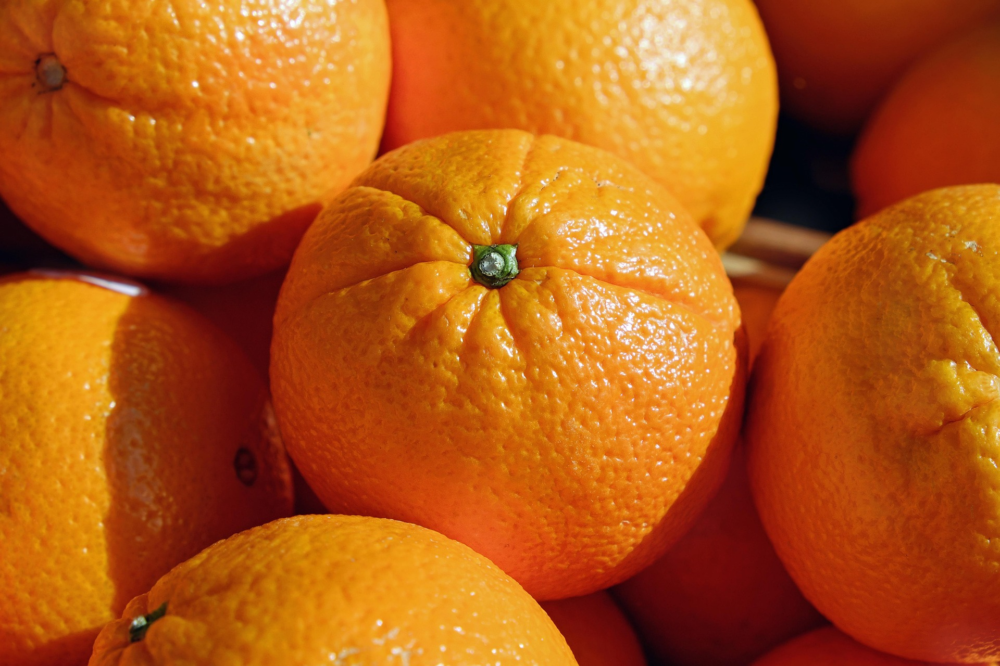
Photo by Photographer NameFresh Orange
Hesperidium FruitOur fresh Egyptian oranges are the gold standard of citrus, featuring a vibrant orange skin, refreshing aroma, and high juice content with a sweet, bold flavor.
- Season: December – June
- Types: Navel, Valencia, Baladi
- Packaging: 15kg Telescopic Cartons / 8kg Cartons
- Container Load: 24 Tons (Reefer 40ft)
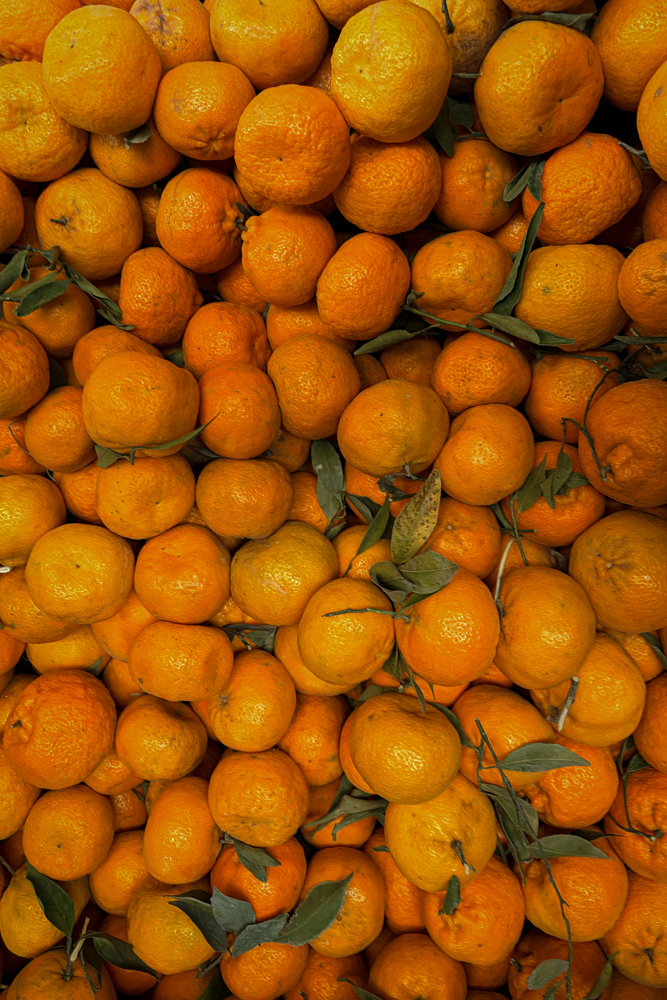
Photo by Osama MohamedFresh Mandarin
Hesperidium FruitCelebrated in international markets for their intense aroma, easy peeling, and remarkably sweet, juicy flavor. Grown under optimal climatic conditions.
- Season: November – April
- Types: Fremont, Honey Murcott, Clementine
- Packaging: 8kg / 10kg / 15kg Cartons
- Container Load: 24 Tons (Reefer 40ft)
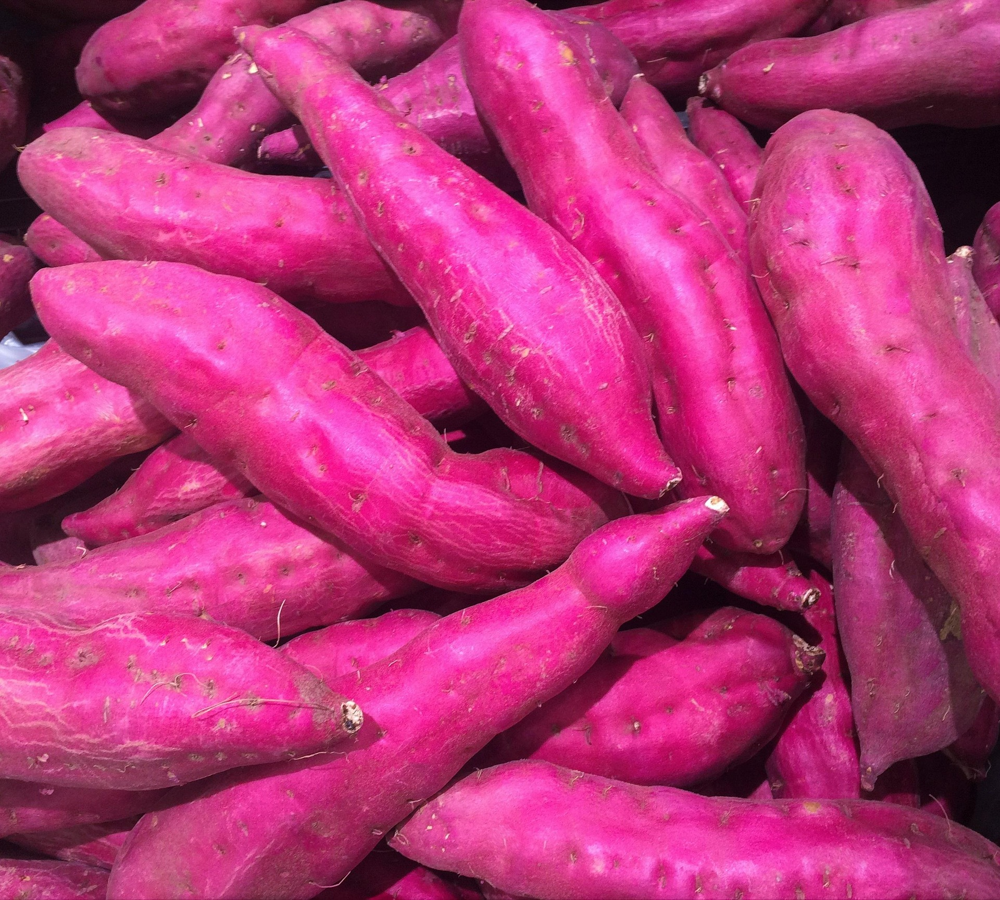
Photo by Photographer NameSweet Potato
Tuberous RootGrown in the ideal climate and rich soil along the Nile Delta, Egyptian sweet potatoes are globally prized for their high sugar content and deep orange flesh.
- Season: July - December / April
- Types: Beauregard, Bellevue
- Packaging: 10kg / 15kg Cartons
- Container Load: 24 Tons (Reefer 40ft)
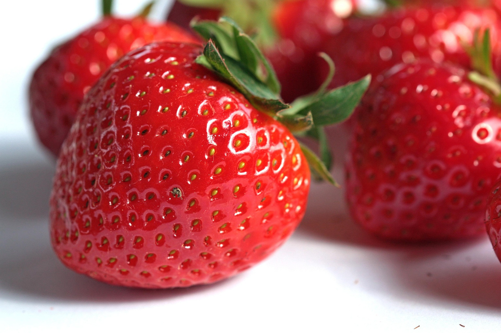
Photo by Photographer NameFresh Strawberry
Aggregate Accessory FruitGrown in the rich fertile soils along the Nile Delta, world-renowned for their vibrant ruby color, balanced sweetness, and exceptional aroma.
- Season: November – April
- Packaging: 15kg Telescopic / Open-top Cartons
- Container Load: 24 Tons (Reefer 40ft)
Fresh Vegetables
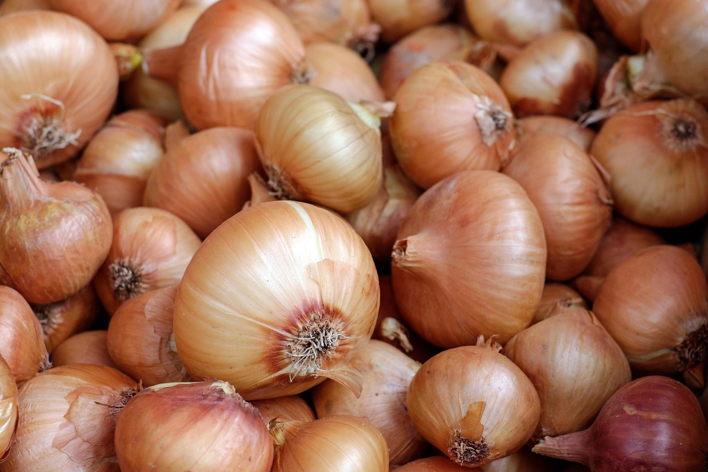
Photo by Photographer NameGolden & Red Onions
Fresh VegetablesProperly cured bulbs with thick dry skins engineered for long-distance export shipping and extended shelf life.
- Season: April – August
- Packaging: 10kg / 25kg Mesh Bags
- Container Load: 25 – 27 Tons
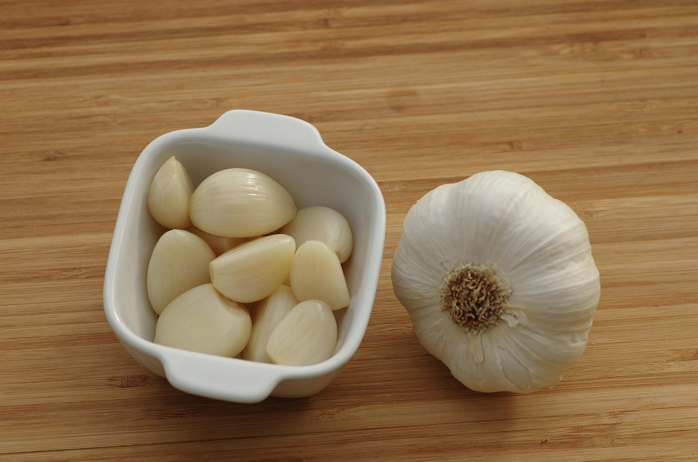
Photo by Photographer NameFresh & Cured Garlic
Fresh VegetablesWhite and purple garlic varieties with firm bulbs, strong aroma, and strict export grading.
- Season: February – May
- Packaging: 5kg / 10kg Cartons or Mesh Bags
- Container Load: 24 Tons
Dried Beans, Seeds & Spices
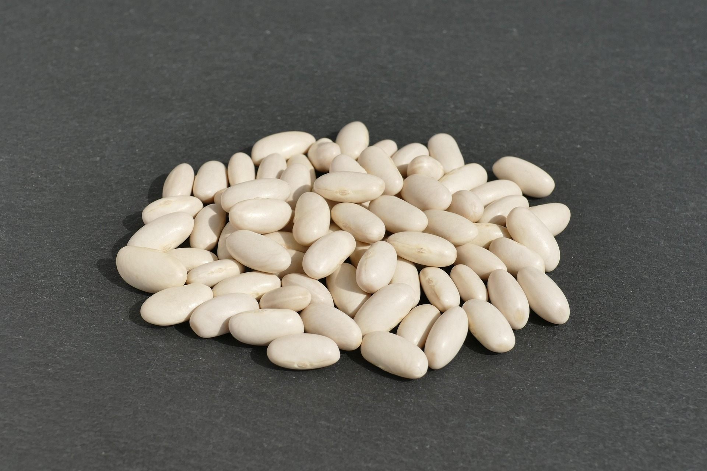
Photo by Photographer NameWhite Kidney Beans (Cannellini)
Dried PulsesPremium, machine-cleaned white kidney beans featuring uniform size, smooth texture, and bright color. Ideal for retail packing and food production.
- Season: Year-Round
- Packaging: 25kg / 50kg PP Bags
- Container Load: 24 – 26 Tons
 Photo by Victoria Bowers
Photo by Victoria Bowers
Cowpeas (Black-Eyed Peas)
Dried PulsesThoroughly sorted and polished seeds ensuring high purity, consistent eye spots, and excellent cooking properties.
- Season: Year-Round
- Packaging: 25kg / 50kg PP Bags
- Container Load: 24 – 25 Tons
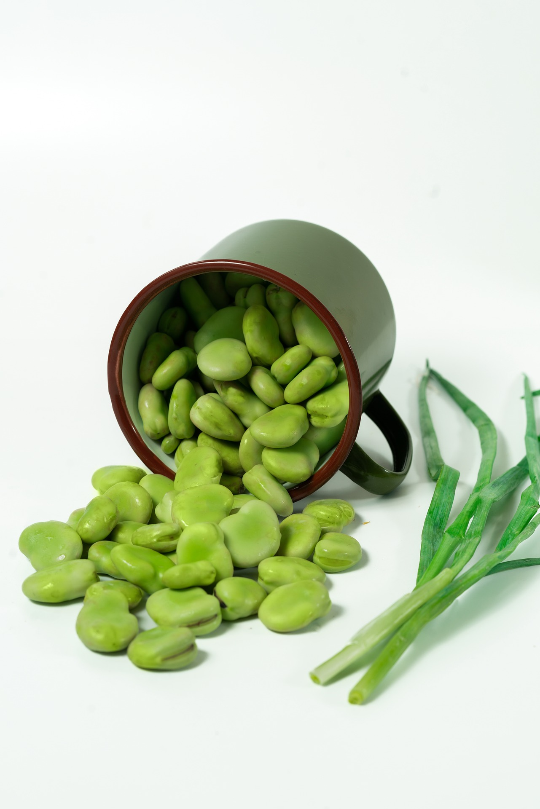
Photo by Shameel MukkathEgyptian Fava Beans
Dried PulsesHigh-protein, carefully machine-sorted dry fava beans processed to strict purity standards for international distribution.
- Season: Year-Round
- Packaging: 25kg / 50kg PP Bags
- Container Load: 25 Tons
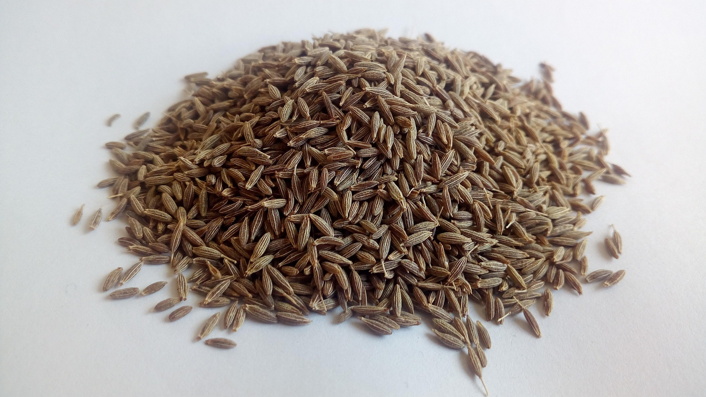
Photo by AmatussamitaheraEgyptian Whole Cumin Seeds
Aromatic SpicesSun-dried, machine-cleaned aromatic cumin seeds known for high essential oil content, intense warm aroma, and rich earthy flavor.
- Purity: 99% - 99.5% Machine Cleaned
- Moisture: 8% Max
- Packaging: 25kg / 50kg Bags
- Container Load: 18 – 20 Tons
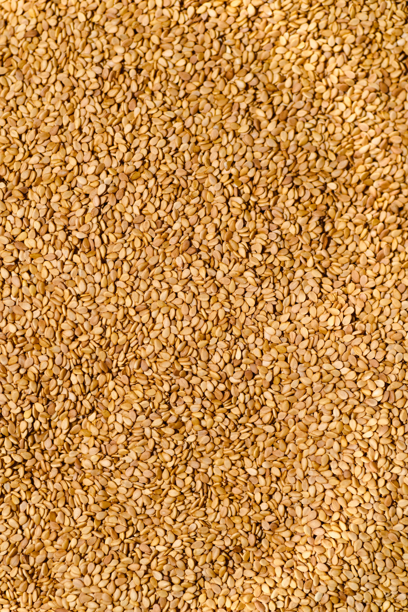
Photo by AmatussamitaheraEgyptian Super Libb (Roasted Seeds)
Seeds & SnacksPremium Egyptian watermelon seeds, professionally cleaned, sized, and prepared for export with high nutritional value.
- Purity: 99% Machine Cleaned
- Moisture: 7% Max
- Packaging: 25kg / 50kg Polypropylene Bags
- Container Load: 18 – 20 Tons
Aromatic Oils
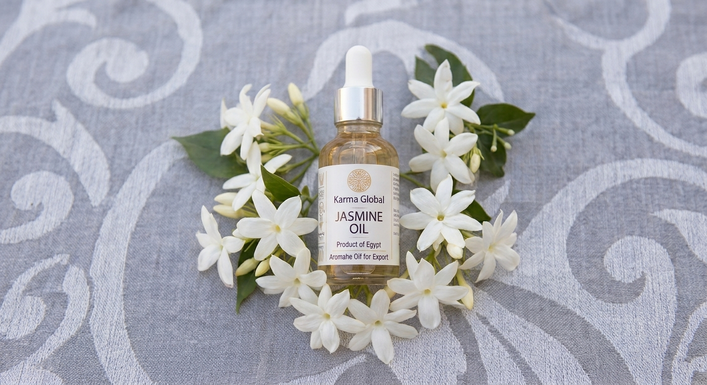
Photo by Photographer NameJasmine Oil (Gasmen Oil)
Aromatic & Essential OilsPure Egyptian Jasmine Absolute (Jasminum grandiflorum). Harvested at dawn in Egypt’s Nile Delta, our 100% pure Jasmine Absolute offers a rich, warm, floral-sweet aroma prized in fine perfumery, luxury skincare, and aromatherapy. Supplied in UV-protective amber glass or epoxy-lined aluminum packaging with full GC-MS and COA documentation.
- Season: Harvest Season: June to November
- Packaging: Commercial Bulk (1kg – 25kg)
- Container Load: Export shipments (1 kg to 50 kg)